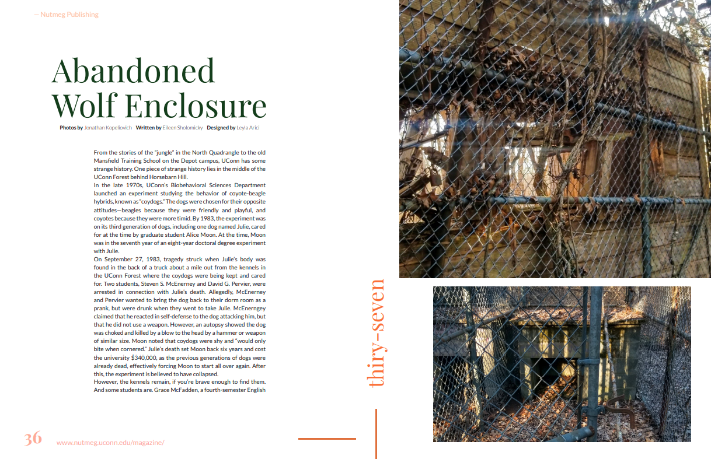
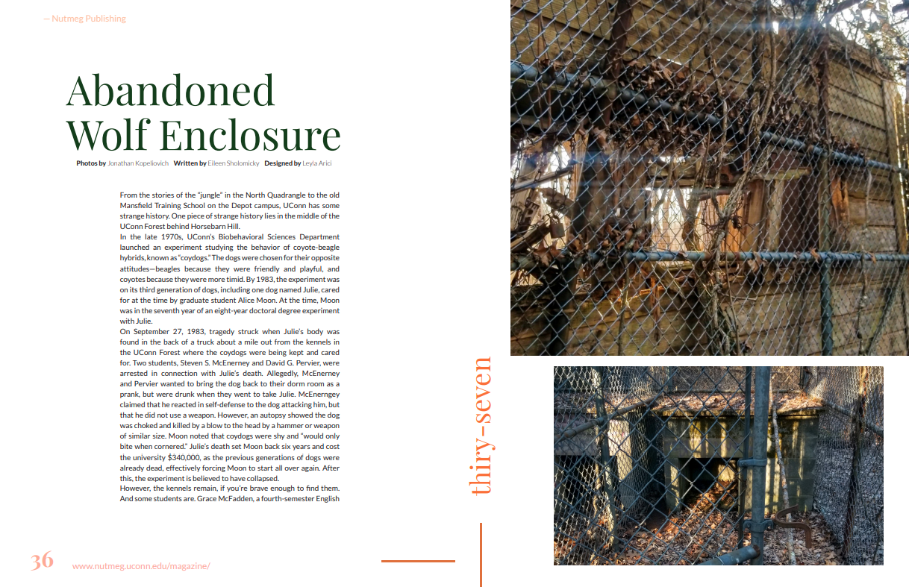
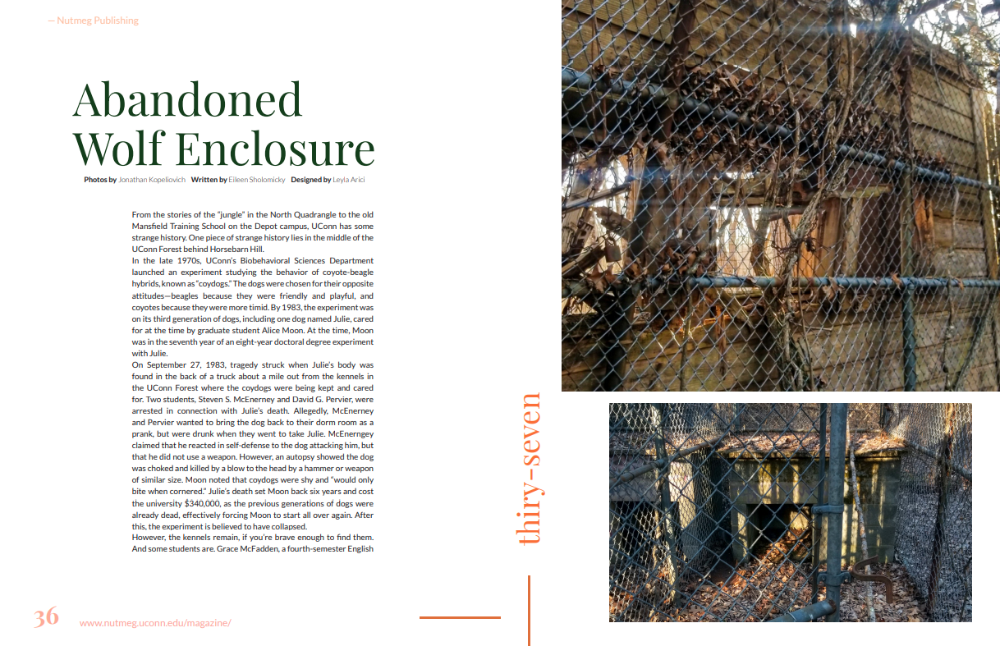

Personal Role: Magazine Managing Editor
As Magazine Managing Editor for Nutmeg Publishing at UConn I have published a magazine for each fall and spring semester at UConn. We have collaborated with multiple organizations like UCTV (UConn Film Organization) on our Diversity and Inclusion Magazine.
Years
3
Affiliation
UConn
Magazines
5


Have you ever wondered about the history and secrets of UConn campus? Are you looking forward to exploring what the Storrs campus has to offer in the fall? Look no further! This magazine is filled with the best secret spots UConn has to offer, from the infamous Depot Campus to UConn students’ favorite study spots—perfect for freshmen looking for something to do on a weekend, or even upperclassmen who want to explore parts of campus they’ve never heard of before! This magazine also features history on some of the most prominent locations on campus like the Great Lawn and the UConn Graveyard, as well as the history of our mascot, the Husky!
Why should we have a diversity magazine? Initially, when I first thought about the question I thought the answer was simple: to showcase people from all different backgrounds and to give them a platform to express their initiatives and ideas. However, as I started to discuss this concept with more people, I think I realized that although one diversity and inclusion magazine will not make a dramatic difference, Nutmeg wants to be a platform for BIPOC (Black, Indengenious, and people of color), but we do not want to take over; we simply want to document and report the feelings and current perspectives of BIPOC UConn students to our readers. Keeping this edition genuine was one of my main goals as editor. Although being affiliated with UConn, I will not simply pat UConn on the back for doing what most would believe is the bare minimum for diversity and inclusion. As UConn students, w e have to admit that there is so much underlying racism in our community that many like to ignore, and numerous incidents like the Charter Oak incident of last year, the repainting of the Black Lives Matter rock, and so many others are a testament to that. This being said, UConn has come a long way in terms of initiatives related to diversity and inclusion. Most,if not all, of these have been started by students who are pushing and want to change this predominantly white institution for the better. The initiatives and ideas that are included in this magazine such as the creation of the @Black. at.uconn Instagram page or numerous organizations pushing for a required anti-racism course are actively developing and will continue to progress long after this magazine is published. Activism that reaches outside of the sphere of UConn will continue, and it’s our responsibility to keep lighting that fire and to keep fighting for what we believe in. It’s also our responsibility to educate our family and friends about the systemic racism within our country and the racism that exists within the UConn community. I hope that you as a reader will understand these sentiments and educate yourself further on these issues as you read this edition on diversity and inclusion.